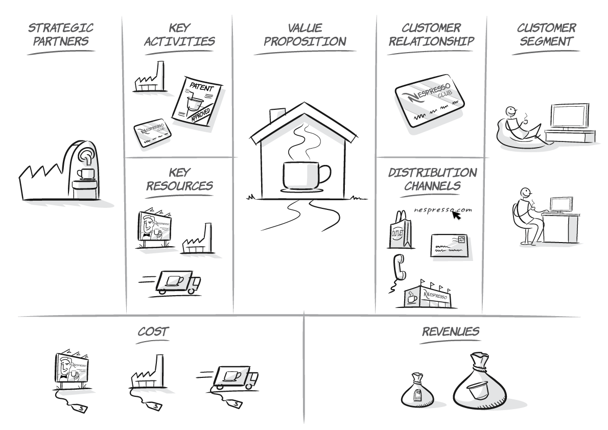
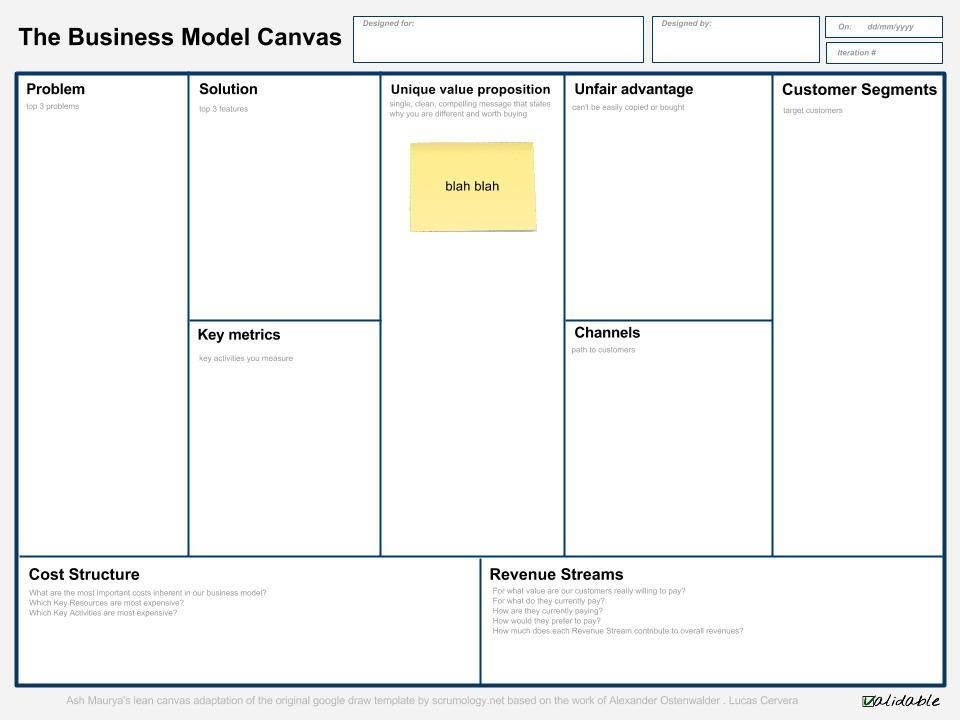
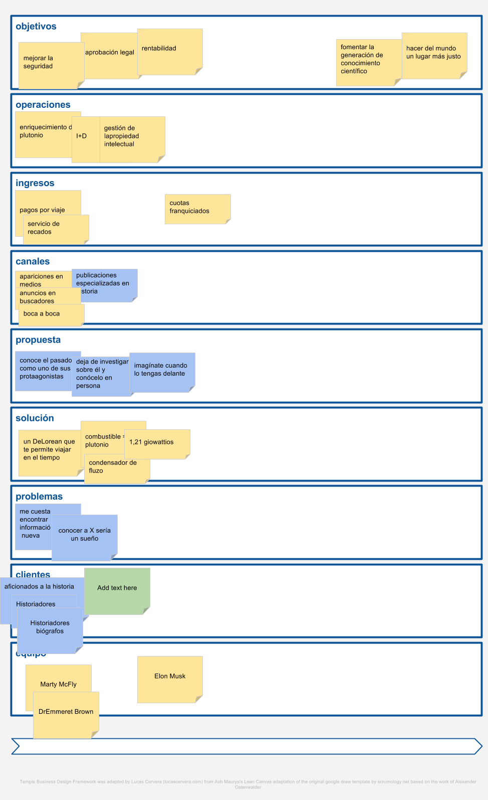

<!doctype html><html lang="en">        <head>                <meta charset="utf-8">                <title>Lucas Cervera</title>                <meta name="description" content="Lucas Cervera">                <meta name="author" content="Lucas Cervera">                <meta name="apple-mobile-web-app-capable" content="yes" />                <meta name="apple-mobile-web-app-status-bar-style" content="black-translucent" />                <meta name="viewport" content="width=device-width, initial-scale=1.0, maximum-scale=1.0, user-scalable=no, minimal-ui">                <link href="https://maxcdn.bootstrapcdn.com/bootstrap/3.3.5/css/bootstrap.min.css" rel="stylesheet" integrity="sha256-MfvZlkHCEqatNoGiOXveE8FIwMzZg4W85qfrfIFBfYc= sha512-dTfge/zgoMYpP7QbHy4gWMEGsbsdZeCXz7irItjcC3sPUFtf0kuFbDz/ixG7ArTxmDjLXDmezHubeNikyKGVyQ==" crossorigin="anonymous">                <link rel="stylesheet" href="https://maxcdn.bootstrapcdn.com/font-awesome/4.4.0/css/font-awesome.min.css">                <link rel="stylesheet" href="css/reveal.css">                <link rel="stylesheet" href="css/theme/white.css" id="theme">                <link rel="stylesheet" href="css/theme/orgasm.css" id="theme">                <!-- Printing and PDF exports -->                <script>                        var link = document.createElement( 'link' );                        link.rel = 'stylesheet';                        link.type = 'text/css';                        link.href = window.location.search.match( /print-pdf/gi ) ? 'css/print/pdf.css' : 'css/print/paper.css';                        document.getElementsByTagName( 'head' )[0].appendChild( link );                </script>                <!--[if lt IE 9]>                <script src="lib/js/html5shiv.js"></script>                <![endif]-->        </head>        <body>                <div class="reveal">                        <!-- Any section element inside of this container is displayed as a slide -->                        <!-- In between the <div="reveal"> and the <div class="slides">-->                        <header style="position: absolute;top: 10px; left: 10px; z-index:500;background-color: whitesmoke"></header>                        <!-- In between the <div="reveal"> and the <div class="slides">-->                        <div id="OrgaSM-content" class="slides">
<!-- LUCASCERVERA TEMPLATE: INSERT SECTIONS HERE -->

<section id='Iniciador'  data-markdown><script type='text/template'><div   class='orgasm'><h1 itemprop='name' class='orgasm-object-name'>Iniciador</h1><div itemprop='summary' class='orgasm-object-summary'><div itemprop='description' class='orgasm-object-description'><aside class='notes'></aside></div><div class='row'><div itemprop='outgoingRelations' class='col-sm-6' style='text-align:left'></div><div itemprop='incomingRelations' class='col-sm-6' style='font-size=0.2em; text-align:right'></div></div></script></section>
<section id='Lucas_Cervera' data-background='files/lucascervera_iniciador.jpg'  data-markdown><script type='text/template'><div   class='orgasm'><h1 itemprop='name' class='orgasm-object-name'>Lucas Cervera</h1><div itemprop='summary' class='orgasm-object-summary'>[[http://lucascervera.com lucascervera.com]]<div itemprop='description' class='orgasm-object-description'><aside class='notes'></aside></div><div class='row'><div itemprop='outgoingRelations' class='col-sm-6' style='text-align:left'></div><div itemprop='incomingRelations' class='col-sm-6' style='font-size=0.2em; text-align:right'></div></div></script></section>
<section id='Objetivos' data-background='files/sport-alley-ball-gam.jpg'  data-markdown><script type='text/template'><div   class='orgasm'><h1 itemprop='name' class='orgasm-object-name'>Objetivos</h1><div itemprop='summary' class='orgasm-object-summary'><div itemprop='description' class='orgasm-object-description'><aside class='notes'><p>El curso tiene los siguientes objetivos:</p><ul><li>Aprender qué es un modelo de negocio y las diferentes herramientas que existen para que un emprendedor pueda diseñar su modelo de negocio.</li></ul><li>Asegurar que el emprendedor comprende que la versión inicial del modelo de negocio sólo es un conjunto de hipótesis.</li><li>Explicar que para validar estas hipótesis es necesario que el emprendedor ejecute una serie de experimentos interactuando con sus clientes potenciales.</li><li>Entender cómo analizar los resultados desde los experimentos y lo que se ha aprendido para mejorar el modelo de negocio.</li><ul><li>Aprender cómo se aplican los principios descritos en Lean Startup.</li></ul><li>Crear una versión inicial de nuestro modelo de negocio.</li><li>Evaluar los riesgos que contiene el mismo y las hipótesis en las que se basa.</li><li>Diseñar una serie de experimentos que permitan validar estas hipótesis.</li><li>Interpretar los resultados de los experimentos para sacar conclusiones y aprendizaje validado.</li><li>Mejorar el modelo de negocio en función de las conclusiones obtenidas tras la ejecución de los experimentos.</li></ul></aside></div><div class='row'><div itemprop='outgoingRelations' class='col-sm-6' style='text-align:left'></div><div itemprop='incomingRelations' class='col-sm-6' style='font-size=0.2em; text-align:right'></div></div></script></section>
<section id='Emprender_sin_tener_ni_idea' data-background='files/Image_227.jpg'  data-markdown><script type='text/template'><div   class='orgasm'><h1 itemprop='name' class='orgasm-object-name'>Emprender sin tener ni idea</h1><div itemprop='summary' class='orgasm-object-summary'><div itemprop='description' class='orgasm-object-description'><aside class='notes'><p>Claro que si, ¿o te crees Mark Zuckerberg sabía mucho de negocios cuando montó Facebook?. Nadie nace sabiendo, excepto tal vez ese niño de gafas que salía en la tele y que a los 12 años había terminado cinco carreras universitarias y hablaba diez idiomas diferentes. Además pronunciaba correctamente 'dentífrico'. El muy canalla.</p><p>Todo esto te lo cuento para que entiendas que aunque no tengas ni la más remota idea de cómo funciona un negocio, puedes aprenderlo. Y tengo una buena noticia para ti: aprender a montar un negocio no sólo es posible, sino que además puede ser una de las experiencias más entretenidas y gratificantes de tu vida. Y no, no es algo reservado a un selecto grupo de personas con una inteligencia fuera de lo común, trayectorias académicas brillantes y exitosas carreras profesionales. Muchos de los emprendedores que he conocido personalmente (de los que sigo a través de sus libros, blogs, conferencias etc…) son personas como tú o yo. La mayor parte no son capaces de decir 'dentífrico' correctamente. Como yo. Y como tú, que seguramente has intentado pronunciar la palabra 'dentífrico' en voz alta en los últimos cinco minutos (o pensado en pronunciarla si estás en un sitio público).</p><p>Pero estás leyendo este libro por lo que deduzco que estás interesado en montar una empresa. Pues bien, también en este área se ha avanzado enormemente en los últimos años, de forma que cualquier emprendedor puede aprender de forma rápida y económica la mejor forma de validar si una idea de negocio puede convertirse en una empresa viable.</p></aside></div><div class='row'><div itemprop='outgoingRelations' class='col-sm-6' style='text-align:left'></div><div itemprop='incomingRelations' class='col-sm-6' style='font-size=0.2em; text-align:right'></div></div></script></section>
<section id='Aprender_en_Internet'  data-markdown><script type='text/template'><div   class='orgasm'><h1 itemprop='name' class='orgasm-object-name'>Aprender en Internet</h1><div itemprop='summary' class='orgasm-object-summary'><div itemprop='description' class='orgasm-object-description'><aside class='notes'><p>En los últimos años es increíble el cambio que ha habido en todo lo referente al acceso a la formación, principalmente gracias a Internet. La cantidad de recursos formativos gratuitos a los que se pueda acceder a través de una simple búsqueda en Google era impensable hace apenas diez años. Esto aplica en general a cualquier campo que pueda ser de tu interés. Si la afición de tu vida es la recreación de monumentos famosos utilizando tapones de botellas, es bastante posible que tengas problemas a la hora de encontrar novia, pero no a la hora de aprender sobre esta curiosa disciplina, e incluso de convertirte en un especialista en la materia de reconocimiento mundial.</p><p>Esta democratización del acceso a la formación es uno de los sucesos que mayor impacto va a tener en los próximos años. Imagínate la cantidad de ideas creativas e innovadoras que pueden surgir cuando la mayor parte de la población mundial tenga acceso a estos recursos formativos y pueda formarse en cualquier campo de su interés a costes que suponen una fracción de lo que le costaría a día de hoy. Bien, pues esto está sucediendo ya, y hay gente muy inteligente con muchos recursos impulsando proyectos como internet.org cuyo objetivo es precisamente este.</p></aside></div><div class='row'><div itemprop='outgoingRelations' class='col-sm-6' style='text-align:left'></div><div itemprop='incomingRelations' class='col-sm-6' style='font-size=0.2em; text-align:right'></div></div></script></section>
<section id='¿Como_puedo_saber_si_mi_idea_va_a_funcionar?'  data-markdown><script type='text/template'><div   class='orgasm'><h1 itemprop='name' class='orgasm-object-name'>¿Cómo puedo saber si mi idea va a funcionar?</h1><div itemprop='summary' class='orgasm-object-summary'><div itemprop='description' class='orgasm-object-description'><aside class='notes'></aside></div><div class='row'><div itemprop='outgoingRelations' class='col-sm-6' style='text-align:left'></div><div itemprop='incomingRelations' class='col-sm-6' style='font-size=0.2em; text-align:right'></div></div></script></section>
<section id='Diseno_de_negocio' data-background='files/Image_225.jpg'  data-markdown><script type='text/template'><div   class='orgasm'><h1 itemprop='name' class='orgasm-object-name'>Diseño de negocio</h1><div itemprop='summary' class='orgasm-object-summary'>de idea a negocio ejecutable<div itemprop='description' class='orgasm-object-description'><aside class='notes'><p>Un modelo de negocio es una representación simplificada de un negocio que permite entender cómo el negocio cumple sus objetivos, en especial el de ser rentable. De igual forma que un arquitecto antes de construir un edificio utiliza unos planos que permiten entender cómo va a ser el mismo, el responsable de diseñar un modelo de negocio deberá crear una representación de su negocio.</p><p>Un modelo es una representación simplificada de la realidad. Si el estadío del proyecto es muy inicial y solamente tenemos una idea de negocio, podremos representar el negocio de forma desestructurada de cualquier forma (incluso en una servilleta), pero luego pasaremos a representarlo utilizando una serie de herramientas que nos permiten crear ese modelo de negocio de forma más sistemática, como puede ser el Business Model Canvas.</p><p>Un modelo de negocio tiene dos objetivos principales:</p><ul><li>Ayudar a la persona(s) que está(n) diseñando ese negocio en su tarea y pensar en todos los detalles importantes</li></ul><li>Ayudar a comunicar cómo funciona el negocio a terceras personas</li></ul></aside></div><div class='row'><div itemprop='outgoingRelations' class='col-sm-6' style='text-align:left'></div><div itemprop='incomingRelations' class='col-sm-6' style='font-size=0.2em; text-align:right'></div></div></script></section>
<section id='Business_Model_Canvas'  data-markdown><script type='text/template'><div   class='orgasm'><h1 itemprop='name' class='orgasm-object-name'>Business Model Canvas</h1><div itemprop='summary' class='orgasm-object-summary'><div itemprop='description' class='orgasm-object-description'><aside class='notes'><p>El Business Model Canvas es una herramienta de gestión estratégica que sirve como una plantilla para desarrollar nuevos modelos de negocio.</p><p>El Business Model Canvas fue concebido por Alexander Osterwalder en 2008. Lo interesante de esta herramienta es que permite conceptualizar un negocio de forma visual en un una sola página utilizando 9 bloques distintos en el de elementos:</p></aside></div><div class='row'><div itemprop='outgoingRelations' class='col-sm-6' style='text-align:left'></div><div itemprop='incomingRelations' class='col-sm-6' style='font-size=0.2em; text-align:right'></div></div></script></section>
<section id='Innovacion_en_modelos_de_negocio' data-background='files/Image_227.jpg'  data-markdown><script type='text/template'><div   class='orgasm'><h1 itemprop='name' class='orgasm-object-name'>Innovación en modelos de negocio</h1><div itemprop='summary' class='orgasm-object-summary'><div itemprop='description' class='orgasm-object-description'><aside class='notes'><p>Un aspecto muy importante es innovar de forma continua en los modelos de negocio.</p><p>Los ciclos de vida de los productos y servicios son cada vez más cortos, lo que significa que hay que innovar de forma continua, no sólo en los productos y servicios que se ofrecen, sino también en los modelos de negocio.</p><p>Un ejemplo puede ser los periódicos, que han funcionado durante muchísimo tiempo ofreciendo una propuesta de valor a los clientes basada en poder estar actualizado sobre lo que pasa en el mundo. Los lectores pagaban una cifra muy razonable (en torno a un euro), y los periódicos conseguían la mayor parte de sus ingresos a través de de campañas publicitarias que pagan los anunciantes.</p><p>Pero llegan los periódicos gratuitos, y se plantean: “si la mayor parte de mis ingresos los estoy obteniendo a partir de los anunciantes ¿cómo puedo variar el modelo de negocio para no tener que cobrar a los lectores y obtener todo el dinero de mis anunciantes?”. Si no tienes que cobrar a los lectores evitas muchas fricciones, por ejemplo en la distribución, el no tener que cobrar a cada cliente, y además favorece el que los lectores, una vez que han leído el periódico, lo dejen disponible en un lugar accesible para que lo lea otra persona. De esta forma aumenta muchísimo el número de lectores y por tanto el valor para los anunciantes.</p><p>Pero esto no se queda ahí. Luego llega el Huffington Post y, para evitar el coste que suponen los generadores de contenido (los periodistas), realiza una modificación en el modelo de negocio para intentar que personas profesionales especializadas en un tema concreto le generen contenidos de alta calidad de forma gratuita a cambio de obtener visibilidad en un medio con bastante reputación.</p><p>Artículo sobre el modelo de negocio del Hufftington Post</p><p>Para diseñar un modelo de negocio que haga las cosas de forma diferente, es especialmente importante conocer cómo se está innovando, por supuesto en tu propia industria, pero también en otras, de forma que pueda servir de inspiración para modificar algún aspecto del modelo de negocio, y que esa diferencia sea fundamental para el éxito de la empresa.</p><p>Algunos ejemplos de modelos de negocio interesantes pueden ser:</p><ul><li>El modelo de add-ons, en el cual se vende una versión básica del producto a un precio muy competitivo y se estructura de forma modular, de forma que se puedan vender añadidos a ese producto que suponen unos ingresos para la empresa. Un ejemplo podría ser la forma en que las aerolíneas han cambiado su propuesta de un billete con todo incluido a un billete que sólo tienen lo más básico, y al cual puedes añadir opciones como el embarque preferente, puedes comprar comida y otros productos dentro del avión, puedes pagar un poco más y estar en una fila cerca de la salida (donde tienes más espacio), si llevas más equipaje, del admitido en el billete estándar, tienes que pagar también un extra, si facturas en el aeropuerto tienes un coste, etcétera.</li></ul><li>Otro modelo de negocio interesante es el basado en publicidad, en el cual se ofrece un contenido gratis para los lectores (que no tienen que pagar por acceder al mismo) y se gana dinero vendiendo espacios publicitarios a anunciantes que quieran hacer llegar sus productos o servicios a ese tipo concreto de lectores. Cuanto más concretos sean los contenidos, y más segmentados los consumidores de los mismos, más valor tendrán para empresas que quieran llegar específicamente al perfil de cliente.</li><li>Los modelos de negocio basados en afiliación se fundamentan en ayudar a vender a otras empresas a cambio de una comisión. Estas empresas que ayudan a vender nunca llegan a poseer ni a manejar el producto, simplemente se les retribuye por referir a clientes al vendedor, que es el que ejecuta la venta. Este modelo de negocio se ha visto enormemente facilitado por internet y herramientas de software que lo implementan de forma sencilla, y permite a los generadores de contenidos obtener ingresos de manera mucho más eficiente que con el modelo de publicidad.</li><li>Otro modelo de negocio se basa en subastas, en que los productos no tienen un precio fijo establecido de antemano, sino que se exponen y se invita a las personas interesadas en adquirirlos a pujar por el producto. También este modelo de negocio se ha visto enormemente facilitado por la aparición de Internet y modelos como el de eBay.</li><li>Otro modelo de negocio es el del anzuelo, en el cual se provee un producto muy básico a un precio bastante bajo y luego se obtiene dinero a través de la venta de algunos consumibles que este producto necesita, y de los servicios que sean necesarios para obtener el valor del uso del producto. Un ejemplo de esto son las maquinillas de afeitar, en el que las cuchillas que se compran de forma recurrente son bastante caras. O los smartphones que se venden con un contrato que te bloquea 18 meses.</li><li>También está el modelo de venta directa, que aunque siempre ha existido, se ha visto quitaría impulsado por las mejoras en los sistemas productivos y de logística. Esto significa para muchos productores la posibilidad de llegar al mercado sin necesidad de intermediarios, disminuyendo muchísimo los costes para el cliente final. Un ejemplo clarísimo de este modelo de negocio es Dell Computers.</li><li>El concepto de franquicia permite comprar un modelo de negocio que ya funciona en una industria particular. El franquiciado paga unos royalties por el privilegio de acceder a una fórmula de negocio, a una red de soporte, a una marca establecida como es el caso McDonalds.</li><li>También está el modelo de negocio freemium en el cual se ofrece algo gratis al consumidor a cambio de información personal de forma que le permita probar y empezar a usar el producto, y a la empresa empezar a establecer una relación con el cliente para que en el futuro compre. Suele utilizarse mucho en servicios donde el lifetime value del cliente es alto. Este modelo es muy popular con ejemplos como Spotify, Skype o Flickr. Muchas veces estos modelos se basan en que el coste marginal de darle servicio a un cliente adicional, tiende a 0.</li><li>Otro modelo muy popular últimamente es el Low Cost, que es el que utiliza Ryanair, en el que el objetivo es obtener un volumen de clientes muy grande con un coste de adquisición del cliente muy bajo, y cargar un precio muy competitivo por el producto o servicio. Se buscan ingresos de diferentes formas, como por ejemplo publicidad en los asientos, ventas por ticket de lotería, por seguros de viaje, por venta cruzada en billetes de tren, por embarque prioritario, etc… El modelo no se basa en obtener muchísimo dinero de los clientes, sino también en configurar bastantes aspectos del negocio para eliminar costes. Por ejemplo, comprando futuros para protegerse ante las fluctuaciones del precio del gasóleo, cerrando acuerdos con destinos turísticos que paguen parte del billete, o consiguiendo que los empleados asuman los costes de su formación.</li><li>Otro modelo de negocio es el pay as you go en el cual sólo pagas lo que consumes de un servicio, como puede ser en el caso de algunos operadores de telefonía a los que puedes comprar tarjetas de teléfono con un crédito cargado. Luego se mide la llamada y se van descontando los minutos que quedan disponibles.</li><li>Otro modelo de negocio es el de ingresos recurrentes, que es bastante difícil de articular, pero una vez obtenido un número significativo de clientes los ingresos son bastante predecibles.</li></ul></aside></div><div class='row'><div itemprop='outgoingRelations' class='col-sm-6' style='text-align:left'></div><div itemprop='incomingRelations' class='col-sm-6' style='font-size=0.2em; text-align:right'></div></div></script></section>
<section id='Desarrollo_de_clientes' data-background='files/Image_219.jpg'  data-markdown><script type='text/template'><div   class='orgasm'><h1 itemprop='name' class='orgasm-object-name'>Desarrollo de clientes</h1><div itemprop='summary' class='orgasm-object-summary'><div itemprop='description' class='orgasm-object-description'><aside class='notes'><p>El desarrollo de negocio clientes es una metodología creada por Steve Blank, que es un profesor de Stanford que también ha puesto en marcha varias empresas como emprendedor y como inversor, y que se dio cuenta de que la mayor parte de las empresas fracasan, no por no ser capaces de crear el producto servicio que tienen en la cabeza sino porque una vez creado el mismo no tienen suficientes clientes como para sostener y desarrollar el negocio. A esto lo denomina el riesgo de mercado.</p><p>Muchísimos emprendedores aplican una mentalidad ingenieril y se centran en desarrollar el producto (que por otro lado es lo que más apetece hacer cuando tienes una idea de negocio), pero no es la decisión más inteligente si lo que quieres no es aprender un nuevo lenguaje de programación o poner en práctica tus capacidades técnicas, sino ganar dinero con la empresa.</p><p>Steve Blank propone que en paralelo al desarrollo del producto se vaya haciendo un desarrollo de clientes, es decir se lleven a cabo acciones orientadas a interactuar con mis clientes potenciales para conocerles bien y validar que efectivamente tienen el problema que quiero resolverles, que son conscientes de que la solución que les voy a ofrecer les va a ayudar a resolver ese problema.</p><p>El desarrollo de clientes propone mitigar el riesgo de mercado cuanto antes interactuando de la forma más temprana posible con los que van a ser nuestros clientes potenciales. Para ello plantea “salir del edificio” y hablar con tus clientes en vez de encerrarte a desarrollar tu producto de forma aislada, y sólo darte cuenta de lo que pasa por la cabeza de los dientes una vez has lanzado el producto y empleado muchísimo tiempo en su desarrollo.</p><p>Después de numerosos años actuando de esta forma se han aprendido tres cosas:</p><ul><li>La primera es que un plan de negocio raramente sobrevive al primer contacto con los clientes. Como decía el boxeador Mike Tyson: “ todo el mundo tiene un plan hasta que le pego en la boca”</li></ul><li>En segundo lugar, nadie se cree un plan a 5 años. Si no sabemos qué pasará con nosotros y con nuestra industria el año que viene, así que es un ejercicio de adivinación el intentar entender cuáles van a ser las cifras de mi negocio dentro de 5 años.</li><li>Tercero: las startups no son versiones en pequeñito de grandes compañías. No tienen que intentar optimizar las operaciones para un modelo de negocio encontrado, sino que deben encontrar precisamente ese modelo de negocio, con lo cual factores como optimización, ajuste fino, etcétera. no aplican en una startup. En una startup debe primar la agilidad y aprender de forma continua de los clientes. Una gran empresa debe ejecutar un modelo de negocio mientras que una startup debe descubrir un modelo de negocio. Más que pasarse meses planificando e investigando, los emprendedores deben aceptar que lo único que tienen en el momento de poner en marcha su empresa es una serie de hipótesis sin validar, así que en vez de escribir doscientas páginas en un plan de negocio, los fundadores deben resumir sus hipótesis en el Business Model Canvas.</li></ul><p>Para validar un modelo de negocio hay que salir del edificio, hay que hacer desarrollo de clientes, hay que salir a la calle y preguntar a usuarios potenciales, compradores potenciales, partners potenciales para que me den feedback en todos los elementos del modelo de negocio. Esto incluye las características del producto, el precio, los canales de distribución y las formas de captar clientes.</p><p>Hay que ser humilde para entender qué no estamos en posesión de la verdad absoluta. Si rápidamente construimos un Producto Mínimo Viable, obtenemos feedback de los clientes y utilizamos ese feedback para revisar nuestras hipótesis, y luego comenzamos el ciclo otra vez, los ajustes que va a necesitar el modelo de negocio cada vez serán más pequeños.</p><p>Un concepto fundamental es averiguar el Coste de Adquisición de Cliente (CAC) para intentar ir reduciéndolo antes de tener el producto listo, y no tener que empezar a hacerlo una vez ya hemos desarrollado el producto. Se trata de evitar estar un año desarrollando el producto para darnos cuenta después del lanzamiento que no tenemos canales para llegar a nuestros clientes y empezar a aprender tan tarde. Es mucho mejor anticipar ese aprendizaje y esa validación de los canales.</p><p>Es especialmente útil es conocer otros modelos de negocio que se aplican en industrias distintas a la nuestra ya que muchas veces el éxito de un modelo de negocio radica en hacer algo distinto incorporando alguna idea que cambie la forma de hacer las cosas en esa industria.</p></aside></div><div class='row'><div itemprop='outgoingRelations' class='col-sm-6' style='text-align:left'></div><div itemprop='incomingRelations' class='col-sm-6' style='font-size=0.2em; text-align:right'></div></div></script></section>
<section id='Validacion_del_problema'  data-markdown><script type='text/template'><div   class='orgasm'><h1 itemprop='name' class='orgasm-object-name'>Validación del problema</h1><div itemprop='summary' class='orgasm-object-summary'>severidad - consciencia - disposición a actuar<div itemprop='description' class='orgasm-object-description'><aside class='notes'><p>Por ejemplo, hace unos años intenté poner en marcha un proyecto de cupones enfocados en el ocio nocturno (al estilo de groupon, que estaba muy de moda entonces). Identificamos a nuestros clientes, los empresarios con locales de ocio nocturno, y el problema a resolver como “no tengo suficientes clientes”. Podríamos habernos dados por satisfechos pensando que el hecho de que hubiera gente en la calle repartiendo flyers de los bares válida esta hipótesis, pero no lo hicimos.</p><p>En cambio, salimos como emprendedores a hablar con los dueños de los locales de ocio nocturno de forma muy abierta. Para nuestra sorpresa, cuando les preguntamos acerca de sus principales problemas, no hacían especial hincapié en el hecho de que hubiera poca gente en sus locales, sino que descubrimos que la mayor parte se quejaba de que la gente llegaba tarde y se lanzaba a consumir las ofertas que menos margen les proporcionaban, con lo cual descubrimos que éste era un problema mucho más interesante para resolver y pivotamos nuestro negocio para ofrecerles una solución a este problema en concreto.</p></aside></div><div class='row'><div itemprop='outgoingRelations' class='col-sm-6' style='text-align:left'></div><div itemprop='incomingRelations' class='col-sm-6' style='font-size=0.2em; text-align:right'></div></div></script></section>
<section id='Validacion_de_la_solucion'  data-markdown><script type='text/template'><div   class='orgasm'><h1 itemprop='name' class='orgasm-object-name'>Validación de la solución</h1><div itemprop='summary' class='orgasm-object-summary'>[http://deloreantimemachines.lucascervera.com/ Producto Mínimo Viable]<div itemprop='description' class='orgasm-object-description'><aside class='notes'><p>Muchas veces nos preguntaremos: http://www.creativebloq.com/wireframes/top-wireframing-tools-11121302¿cómo voy a llevar a cabo un experimento y mostrar la solución a mis clientes potenciales si todavía no tengo construido el producto?” Ahí es donde entra el concepto de Producto Mínimo Viable.</p><p>Si, por ejemplo, estás pensando en crear una aplicación móvil, no hace falta que la tengas totalmente desarrollada y operativa para ponerla en frente de tus clientes potenciales y obtener feedback. <u>Hay innumerables herramientas disponibles en Internet que te permiten hacer prototipos y mockups del producto</u> y demostrar su funcionamiento, aunque no haya detrás un aplicación funcionando, sino un conjunto de diseños de pantalla que permiten ejecutar las acciones simulando un uso de la aplicación.</p><p>También es importante averiguar si el precio que barajamos del producto es adecuado.</p><p>La forma de llevar a cabo los experimentos consiste en planificar en el experimento y poner valor a los indicadores que queremos conseguir. Posteriormente se ejecuta el experimento, se recopilan los datos y se calcula el valor de los indicadores. Por último se contrastan los resultados obtenidos con los objetivos marcados y se sacan conclusiones que tal vez lleguen a modificar el modelo de negocio.</p><p>Es muy importante dejar hablar a los clientes. En este tipo de entrevistas los emprendedores deberían hablar muy poco y escuchar mucho. Es muy importante dejarles claro que no les estás vendiendo nada, no entrar en modo vendedor y soltar tu discurso, sino que se trata de escuchar al cliente. Tampoco se trata de plantear preguntas buscando respuestas que confirmen nuestras hipótesis, si no de ver si se validan solas.</p><p>Muchas veces salen a la luz problemas superficiales, que son manifestaciones de problemas más profundos, y es conveniente encontrar la causa raíz del problema. Para ello se utiliza la llamada cadena de porqués (o los cinco porqués). Por ejemplo si alguien tiene un problema con un coche que no arranca y preguntas “¿por qué?”, la primera respuesta es que la batería no funciona, si preguntas el porqué, la razón será que el alternador no funciona, al siguiente “¿por qué?” la respuesta será que la correa del alternador se ha roto y la respuesta al siguiente “¿por qué?” será que la correa del alternador se usó más allá de su vida útil, y si, de nuevo, pregunto el porqué, saldrá a la luz que el vehículo no tuvo un mantenimiento acorde a las recomendaciones del fabricante.</p><p>Es bueno llevar un registro de las entrevistas que se han mantenido. Para ello se puede usar una hoja de cálculo. También es buena idea pedirles algunos datos y concertar citas para más adelante de forma que en el futuro podamos enseñarles la solución e involucrarles de forma que nos den feedback. A muchas personas les gusta participar y ayudar a un emprendedor.</p><p>Las entrevistas hay que prepararlas. Para ello lo primero es tener muy claro y muy definido quiénes son tus clientes y deshacerse de todas las nociones preconcebidas. Hay que intentar testear primero las asunciones que suponen un riesgo mayor. Las entrevistas pueden ser con miembros de tu público objetivo directamente, pero también suele ser muy útil hablar con personas que, sin ser tu público objetivo, lo conocen en profundidad (por ejemplo por que trabaja con ellos).</p><p>Otra buena idea es terminar las entrevistas preguntándoles con qué persona que conozcan creen que puede ser interesante que habléis.</p><p>Hay que tener mucho cuidado con llevar a cabo entrevistas con gente próxima nosotros, como familiares, amigos, etcétera. ya que sus opiniones van a estar sesgadas por la relación que mantienen contigo.</p><p>Las mejores personas para hablar son las que tienen un son las que sienten de forma especialmente intensa el problema que intentas resolver.</p><p>El tipo de experimentos que debe llevar a cabo un emprendedor depende de la fase en la que se encuentre el proyecto:</p><ul><li>En una primera etapa o fase de exploración (las primeras veces que sales del edificio a validar las hipótesis) se lleva a una investigación de mercado cualitativa a través de preguntas abiertas y sin dirigir demasiado la conversación con los clientes potenciales. Si se les deja hablar deberían salir a la luz los problemas que hemos identificado. A veces es confuso hablar con muchos clientes, ya que muchos hacen referencia a distintos problemas y en ocasiones es difícil identificar patrones de problemas que tengan lugar en muchos clientes. En esta primera etapa vamos a intentar validar dos aspectos principales del modelo de negocio: que los clientes que me dirijo son los correctos y que los problemas que quiero resolver son los correctos. Puede suceder, y de hecho es deseable, que durante estas interacciones, en las que realizo preguntas abiertas, identifique nuevos problemas que tienen mis clientes y que no había tenido en cuenta. Con frecuencia además se identifican problemas que son más interesantes para resolver que los que tenía inicialmente identificados.</li></ul><li>La siguiente fase es la de presentación en la que les planteó la solución que se me ha ocurrido a sus problemas y compruebo si la perciben como satisfactoria. Para la fase de presentación suele ser necesario contar al menos con un Producto Mínimo Viable que me permita explicar a los clientes como quiero solucionar su problema.</li></ul><p>Cuando planifico los experimentos debo definir un criterio mínimo de éxito. Debo acotar los experimentos de forma cerrada en el tiempo y pensar qué indicadores voy a utilizar para medir si las hipótesis que estoy intentando probar se cumplen o no. Es decir, debo identificar una serie de indicadores, y en la planificación del experimento, ponerles un valor objetivo. Luego una vez ejecutado el experimento, contrastaré los resultados de los indicadores con los objetivos que me había planteado, para dar por ciertas o falsas las hipótesis que estoy intentando validar.</p></aside></div><div class='row'><div itemprop='outgoingRelations' class='col-sm-6' style='text-align:left'></div><div itemprop='incomingRelations' class='col-sm-6' style='font-size=0.2em; text-align:right'></div></div></script></section>
<section id='Lean_Startup' data-background='files/clinic-doctor-health-hospital.jpg'  data-markdown><script type='text/template'><div   class='orgasm'><h1 itemprop='name' class='orgasm-object-name'>Lean Startup</h1><div itemprop='summary' class='orgasm-object-summary'><div itemprop='description' class='orgasm-object-description'><aside class='notes'><p>La metodología que utilizaremos para diseñar y validar nuestro modelo de negocio se llama Lean Startup y propone la puesta en marcha de nuevas empresas maximizando los resultados obtenidos con los mínimos recursos posibles. Una startup es una organización temporal destinada a encontrar un modelo de negocio repetible y escalable.</p><p>Es fundamental llevar a cabo este proceso con agilidad, es decir: hay que estar preparado para descubrir nuevos aspectos alrededor de nuestro mercado y cambiar el modelo de negocio para adecuarlo a lo que vamos aprendiendo. </p><p>Lean Startup es un método de desarrollo de negocios y productos, que propuso por Eric Ries en 2011, con el objetivo de reducir los ciclos de desarrollo de producto utilizando una combinación de experimentación y despliegue iterativo de productos, con el objetivo de obtener cuanto antes el llamado aprendizaje validado.</p><p>Surge especialmente enfocado a empresas de alta tecnología, aunque posteriormente se le ha encontrado aplicación, a través de distintas adaptaciones, a cualquier tipo de organización que quiera desplegar nuevos productos o servicios en un mercado. Aunque surgió en Silicon Valley actualmente se ha convertido en el modelo de referencia para poner en marcha startups en cualquier parte del mundo.</p><p>El concepto surge cuando Eric identifica por su propia experiencia que muchas empresas fallan porque no entienden bien las necesidades, deseos y problemas de sus clientes, y porque se focalizan demasiado en el lanzamiento del producto. Otro problema surge cuando la visión es demasiado concreta, y no se adapta a lo que se va averiguando que quieren los clientes.</p><p>La filosofía Lean Startup se basa en el llamado “lean manufacturing”, una metodología de producción que considera que es un desperdicio cualquier gasto de recursos que no tenga relación con la creación de valor para el cliente final, y por lo tanto debe ser eliminado. Surge en un entorno muy industrial y se basa en minimizar los inventarios y mejorar las conexiones con los proveedores. </p><p>Lean Startup aplica esa filosofía a las startups y lo que intenta es eliminar todas las prácticas que suponen un desperdicio de recursos, y aumentar al máximo el valor producido durante el desarrollo de negocio, para que la startup pueda tener éxito sin necesitar muchísima inversión. Hace especial hincapié en obtener feedback de los clientes durante la fase de desarrollo del producto, y asegurar que no se va a perder el tiempo en implementar características, del producto o servicio, que no quieren los clientes.</p><p>Esto se lleva a cabo utilizando indicadores de desempeño y procesos de mejora continua. Se trata de encontrar la forma más efectiva en costes de construir un producto mínimo, que permita obtener feedback de clientes.</p><p>Algunos conceptos interesantes que se introducen en la filosofía Lean Startup son:</p><ul><li>El Producto Mínimo Viable, que es la versión de un producto que permite al equipo obtener la máxima cantidad de aprendizaje validado sobre los clientes, con el menor esfuerzo posible. Trata de poner a prueba las hipótesis fundamentales del modelo de negocio. Como ejemplo: el fundador de Zappos debía testear la hipótesis de que los clientes están dispuestos a comprar zapatos online, así que, antes de construir un sitio web donde comprar zapatos, fue a tiendas locales de zapatos, hizo fotos de su inventario, puso las fotos online, compró zapatos al precio normal y se los vendió a sus clientes. Una vez comprobó claramente que había demanda para su idea, ha construido un negocio que factura más de un billón de dólares.</li></ul><li>Un principio incluido en Lean Startup es el despliegue continuo (cuando se habla de proyectos de software), que es un modelo en el cual el código se escribe e inmediatamente se saca producción (incluso llegando a 50 veces al día)</li><li>Otro concepto es el split testing o pruebas A/B. Consiste en que diferentes versiones del productos se ofrecen a la vez a los clientes, y se intentan observar las diferencias de comportamiento entre los clientes que han sido expuestos a una y otra oferta. También se puede ejecutar en serie, de forma que una semana un grupo de usuarios vea un producto, la semana siguiente otro, etc...</li><li>Otro aspecto en el que hace muchísimo hincapié Lean Startup es en definir una serie de métricas accionables, que permitan tomar decisiones informadas, huyendo de las llamadas métricas de vanidad, que son métricas que presentan muy bien los resultados de la empresa pero que son inexactas y pueden llevar a decisiones equivocadas. </li><li>Fundamental es el concepto de pivotar, que consiste en corregir el modelo de negocio como consecuencia de información obtenida en los experimentos. Un ejemplo clásico de pivote es el que llevó a cabo Groupon, que empezó siendo una plataforma de activismo online y después de no tener aceptación, los fundadores empezaron a vender cupones de una pizzería cercana. Una vez hubieron conseguido 20 compradores entendieron que la idea tenía sentido y ahora es un negocio de varios billones de dólares. </li><li>También muy importante es el ciclo construye-mide-aprende en el que se basa el desarrollo de productos según la filosofía del Lean Startup: construye un Producto Mínimo Viable que puedas enseñar a tus clientes potenciales, mide los resultados de las interacciones y saca conclusiones para mejorar el producto.</li></ul><p>Otro concepto generalmente asociado a Lean Startup es el bootstraping, qué significa llevar el producto lo más adelante posible con los recursos de los fundadores, para llegar a obtener un producto rentable sin inversión externa. Un ejemplo es la empresa Basecamp, que ha desarrollado un software de gestión de proyectos que le permiten facturar muchísimo dinero sin apenas inversión externa, y sin un equipo grande. Otro ejemplo sería la página milanuncios.com recientemente vendida al líder europeo de anuncios clasificados por 100 millones de euros, que a día de hoy es el sitio con más páginas vistas de España, y que tampoco requirió inversión externa para ser adquirida.</p><p>Poner en marcha una nueva empresa, tanto si es una startup, un pequeño negocio o una iniciativa dentro de una corporación grande, siempre ha sido una apuesta de éxito o fracaso. Si seguimos las aproximaciones que se vienen aplicando desde hace tiempo, es necesario escribir un plan de negocio, enseñárselo a inversores, constituir un equipo, introducir un producto y empezar a vender. Pero es posible que en esta secuencia de eventos falle algo. Hasta un 75 de la por ciento de las startups falla. Lean Startup favorece la experimentación sobre una planificación elaborada, el feedback de los clientes sobre la intuición de los fundadores, y el diseño iterativo como alternativa al tradicional desarrollo en cascada .</p><p>Aunque tiene muy pocos años de existencia, se aceptado como un estándar de facto en el mundo de los emprendedores y las escuelas de negocio han comenzado a adaptar su currículum para incluirlo. Ya es algo más que una palabra de moda que nadie entiende. Hay bastantes casos de éxito de su aplicación práctica en proyectos de emprendedores</p><p>Una idea importante es: “falla pronto, falla barato” es decir intenta detectar todos los fallos que pueda tener tu modelo de negocio cuanto antes. Otro aspecto importante es el de intentar “cometer siempre nuevos errores”. Es absurdo que una startup fracase cometiendo errores que ya son lecciones aprendidas.</p><p>El plan de negocio tradicional, que se venía considerando como la primera cosa que debía hacer el fundador de una empresa, es un documento estático que describe el tamaño de la oportunidad, el problema a resolver, y la solución que se va a proveer, con un unas proyecciones financieras a 5 años. Básicamente es un ejercicio de investigación, que se escribe de forma aislada antes de haber comenzado a construir el producto, y que supone que el emprendedor va a ser capaz de identificar muchísimos aspectos que desconoce de su cliente antes de obtener el dinero necesario.</p><p>Una vez el emprendedor con su plan de negocio obtiene el dinero de los inversores, empieza a desarrollar el producto también de forma aislada y trabajará muchísimas horas para tener el producto listo para el lanzamiento sin haber obtenido prácticamente input de los clientes. </p><p>Es sólo después del lanzamiento del producto cuando la empresa empieza a obtener feedback de sus clientes, cuando los vendedores están intentando obtener clientes. Esto muchas veces ocurre tras de años de desarrollo.</p><p>Lean Startup usa una práctica llamada desarrollo ágil que se originó en la industria del software. El desarrollo ágil va de la mano con el desarrollo de clientes y trata de evitar los típicos ciclos de desarrollo del producto que duran años y que presuponen una serie de problemas de los clientes. El desarrollo ágil es el proceso que se utiliza para crear el Producto Mínimo Viable. (Hasta aquí)</p><p>Hay que evitar actuar en modo oculto, como se hacía popularmente durante la burbuja de las .com para evitar que competidores potenciales nos arrebaten una oportunidad de mercado. Lean Startup en cambio propone obtener feedback cuanto antes exponiendo el producto a clientes potenciales. No hay nada peor que construir un producto que nadie quiere comprar, y este es precisamente un error cometido por muchísimas startups que desperdician muchísimo dinero, recursos e ilusión en construir un producto.</p><p>Es habitual que una startup, cuando saque su producto al mercado tenga muchísimas dificultades para llegar a sus clientes. Un problema muy habitual en las empresas nuevas es no prestar atención con suficiente antelación a averiguar qué canales van a poder utilizar para llegar a sus clientes. Muchas simplemente asumen que el boca a boca, las redes sociales, o la viralidad del producto van a servir para que su mercado potencial conozca el mismo, pero no suele resultar así. Muchas veces encontrar los canales a través de los cuales puedes llegar a un número suficiente de clientes potenciales con un coste adecuado es una de las mayores dificultades que se encuentra la empresa.</p><p>Lo bueno es que se pueden empezar a investigar, averiguar y a experimentar con los canales antes de tener el producto listo. Por ejemplo, puede valer con lanzar una página de aterrizaje que describa brevemente lo que va hacer el producto, y que a todas luces se muestre como una página totalmente operativa. Luego se puede desarrollar una campaña de anuncios en Google durante un tiempo determinado y con un presupuesto limitado en la que intentamos llegar a gente que usa determinadas palabras clave en el buscador.</p><p>Una vez pase algo de tiempo tendremos datos sobre cuánto nos cuesta cada click de clientes potenciales en nuestros anuncios e iremos encontrando mejores palabras clave (o incluso descartaremos ese canal como uno de los que vamos a tener en cuenta).</p></aside></div><div class='row'><div itemprop='outgoingRelations' class='col-sm-6' style='text-align:left'></div><div itemprop='incomingRelations' class='col-sm-6' style='font-size=0.2em; text-align:right'></div></div></script></section>
<section id='Running_Lean' data-background='files/nature-leaf-bokeh-macro.jpg'  data-markdown><script type='text/template'><div   class='orgasm'><h1 itemprop='name' class='orgasm-object-name'>Running Lean</h1><div itemprop='summary' class='orgasm-object-summary'><div itemprop='description' class='orgasm-object-description'><aside class='notes'></aside></div><div class='row'><div itemprop='outgoingRelations' class='col-sm-6' style='text-align:left'></div><div itemprop='incomingRelations' class='col-sm-6' style='font-size=0.2em; text-align:right'></div></div></script></section>
<section id='Lean_Canvas'  data-markdown><script type='text/template'><div   class='orgasm'><h1 itemprop='name' class='orgasm-object-name'>Lean Canvas</h1><div itemprop='summary' class='orgasm-object-summary'><div itemprop='description' class='orgasm-object-description'><aside class='notes'><p>Para diseñar el modelo de negocio partiendo de cero, se utiliza el Lean Canvas, una adaptación del Business Model Canvas adecuado a la metodología Lean Startup, que define quiénes son mis clientes, qué problema, necesidad o deseo les resuelvo, qué solución les ofrezco, cuál es la propuesta única de valor, qué canales voy a usar para llegar a ellos y cómo voy a generar ingresos.</p><p>El Lean Canvas fue creado por Ash Maurya en 2009. La adaptación surge porque Ash se da cuenta de que la mayor parte de los ejemplos y el enfoque del Business Model Canvas se aplicaban a empresas que ya tienen un modelo de negocio y facturan cifras elevadas, pero es menos útil para empresas que están partiendo de cero. Por ello se crea el Lean Canvas, orientado a documentar las hipótesis del modelo de negocio, y posteriormente se publica running lean, una metodología para poner en marcha los principios descritos en Lean Startup. </p><p>El objetivo del Lean Canvas es ser totalmente accionable y mantenerse focalizado al emprendedor, teniendo en cuenta que las startups operan bajo condiciones de extrema incertidumbre. Para ello una vez completado el Lean Canvas nos centramos en aquellos aspectos o aquellas hipótesis sobre las que hay más incertidumbre o sobre las que hay más riesgo.</p><p>El Lean Canvas descarta algunos tipos de elemento del Business Model Canvas y añade otros como pueden ser:</p></aside></div><div class='row'><div itemprop='outgoingRelations' class='col-sm-6' style='text-align:left'></div><div itemprop='incomingRelations' class='col-sm-6' style='font-size=0.2em; text-align:right'></div></div></script></section>
<section id='Lienzo_de_Cajas'  data-markdown><script type='text/template'><div   class='orgasm'><h1 itemprop='name' class='orgasm-object-name'>Lienzo de Cajas</h1><div itemprop='summary' class='orgasm-object-summary'><div itemprop='description' class='orgasm-object-description'><aside class='notes'><p>Es cierto que la aplicación del Business Model Canvas y del Lean Canvas supone un avance enorme de cara a diseñar tu negocio con herramientas sencillas y prácticas. Además ayuda a desterrar para siempre el plan de negocio de 700 páginas cuya única función es acumular polvo. Pero, en mi opinión, presenta algunas complejidades innecesarias, como el tener que especificar el orden (totalmente contraintuitivo) en el cual es lógico ir trabajando a la hora de diseñar el modelo de negocio, con un esquema tan complejo como el siguiente:</p><p>Además, creo que se puede simplificar aún más sin renunciar a incluir y contemplar aspectos adicionales.</p><p>Un punto relevante de Business Model Canvas y del Lean Canvas es que el solo contemplan algunos de los aspectos que son importantes a la hora de poner en marcha una negocio (lo cual no es ni mucho menos una crítica, sino una limitación sin más).</p><p>El Lienzo de Cajas es una herramienta que permite diseñar un negocio utilizando los componentes más importantes del Lean Canvas, y que contempla otros aspectos adicionales como equipo, operaciones y objetivos.</p><p>En el el Lienzo de Cajas, el modelo de negocio es sólo uno de los cuatro componentes que se consideran importantes a la hora de diseñar un negocio. El el Lienzo de Cajas considera los siguientes cuatro componentes en un negocio:</p><ul><li>Equipo: ¿Quien va a formar parte de este negocio?</li></ul><li>Objetivos:¿Porque se crea este negocio?</li><li>Modelo de negocio: ¿podemos constuir un negocio rentable?</li><li>Operaciones: ¿cómo vamos a trabajar para conseguirlo?</li></ul><p>A continuación se incluye una imagen del Lienzo de Cajas. Están basada en el ejemplo que utiliza en adelante para ilustrar los conceptos que vaya explicando, y que te resultará familiar siempre que hayas nacido en los 70 o antes.</p><p>[imagen: Business Design el Rack]</p><p>A continuación os voy a explicar en detalle en qué consiste cada uno de estos componentes. Para ilustrarlo utilizaré como ejemplo el proyecto empresarial de un adolescente y un inventor que quieren crear un negocio en torno a una máquina del tiempo que han creado modificando un Delorean .</p></aside></div><div class='row'><div itemprop='outgoingRelations' class='col-sm-6' style='text-align:left'></div><div itemprop='incomingRelations' class='col-sm-6' style='font-size=0.2em; text-align:right'></div></div></script></section>
<section id='Ideacion_y_seleccion' data-background='files/hands-people-woman-working.jpg'  data-markdown><script type='text/template'><div   class='orgasm'><h1 itemprop='name' class='orgasm-object-name'>Ideación y selección</h1><div itemprop='summary' class='orgasm-object-summary'><div itemprop='description' class='orgasm-object-description'><aside class='notes'><p>Vamos a describir cómo se puede usar el el Lienzo de Cajas como marco para diseñar un negocio. En general la filosofía consiste en trabajar sobre el lienzo dibujado en una superficio (en una cartulina, en papel, una pizarra, digital, etc...) e ir definiendo iterativamente los detalles del mismo. En las primeras interacciones simplemente utilizaremos post-its para ir anotando las ideas y los pegaremos en la caja correspondiente del Lienzo de Cajas. A medida que vayamos refinando el diseño de negocio iremos incluyendo los detalles en un documento de texto.</p><p>El negocio debe diseñarse de forma ágil e iterativa, esto es pasando rápidamente de un tipo de componente a otro y volviendo a revisar los mismos después de haber dado una vuelta a anterior.</p><p>Cuando identifiques un nuevo componente del negocio, como por ejemplo, un nuevo problema o un nuevo canal, anótalo rápidamente en un post-it y pégalo en la caja correspondiente sin preocuparte demasiado de que la frase que escribes sea perfecta. Lo único importante es que cuando vuelvas a leerla recuerdes el concepto al que se refiere.</p><p>Si te trabas en alguna caja no importa, pasa a la siguiente y ya te surgirán ideas la próxima vez que vuelvas a esa caja.</p></aside></div><div class='row'><div itemprop='outgoingRelations' class='col-sm-6' style='text-align:left'></div><div itemprop='incomingRelations' class='col-sm-6' style='font-size=0.2em; text-align:right'></div></div></script></section>
<section id='Identifica_los_riesgos' data-background='files/Image_224.jpg'  data-markdown><script type='text/template'><div   class='orgasm'><h1 itemprop='name' class='orgasm-object-name'>Identifica los riesgos</h1><div itemprop='summary' class='orgasm-object-summary'><div itemprop='description' class='orgasm-object-description'><aside class='notes'><p>Una vez diseñado el modelo de negocio candidato, nos centraremos en tratar de identificar los motivos que puedan dar al traste con el proyecto empresarial. Por ello es muy importante identificar los riesgos, de forma que me permita saber por dónde empezar a desarrollar mi proyecto.</p><p>Para identificar las hipótesis contenidas en nuestro modelo de negocio, una vez hayamos realizado la versión inicial del lienzo de negocio, daremos un paso atrás para verlo con perspectiva, y nos haremos la siguiente pregunta:</p><p>¿Qué estoy suponiendo que es cierto para que pueda funcionar este negocio?</p><p>Casi todos los post-it que tengamos en el modelo de negocio llevarán implícita una o varias hipótesis.</p><p>Por ejemplo si estoy pensando en crear un periódico en el que los contenidos van a ser generados por voluntarios a cambio de obtener visibilidad como profesionales, lo consideraré una hipótesis, ya que puede suceder que no les resulte una propuesta interesante.</p><p>El grado de riesgo asociado a cada hipótesis dependerá del en gran medida del conocimiento que tenga del mercado al que me dirijo. No es lo mismo que la hipótesis anterior sea planteada por un profesional que ha sido alto ejecutivo de periódicos durante 20 años y que luego a desarrollado una carrera como consultor con durante 15, a que la plantee un estudiante de 2º de Bellas Artes. Obviamente hay mucha más incertidumbre en este segundo caso.</p><p>Lo que plantea Steve Blank es identificar a nuestros clientes potenciales, salir a la calle e interactuar con ellos a través de conversaciones, entrevistas, encuestas, etc... para validar que lo que tenemos en la cabeza, y estamos suponiendo que piensan, es efectivamente correcto.</p><p>Es absolutamente normal que varias de las hipótesis que tenemos acerca de nuestro público objetivo resulten no ser ciertas y haya que cambiar el modelo de negocio. Si el cambio es moderado y se trata de ajuste, fino lo realizaremos con facilidad. Pero si alguna de las hipótesis principales de nuestro modelo de negocio resulta no ser cierta, entonces tendremos que pivotar , es decir, aplicar un cambio sustancial al modelo de negocio o, incluso, descartarlo.</p><p>Descartar a tiempo un proyecto empresarial puede considerarse un “éxito con minúsculas”, ya que se ha empleado poco tiempo y recursos para comprobar que esa idea no va a ningún sitio. El emprendedor no debe contemplar este escenario como trágico, ya que muchas veces solamente los conocimientos generados y la experiencia acumulada al intentar poner en marcha un negocio justifican con creces el esfuerzo, tiempo e ilusión empleados.</p><p>Hay que ser conscientes de que lo que de verdad es un fracaso es intentar poner en marcha durante un año un proyecto que no va a ningún lado, y que hubiera sido posible descartar en caso de haber aplicado correctamente el desarrollo de clientes.</p><p>Todas las hipótesis que encontremos llevan asociados riesgos, ya que si resultan no ser ciertas, es bastante probable que nuestro modelo de negocio no funcione.</p><p>Una de las formas de desperdicio de tiempo dinero y esfuerzo principales en un proyecto emprendedor es la incorrecta priorización de tareas. Comenzaremos por definir dos conceptos importantes:</p><ul><li>incertidumbre: es la falta de certeza total, es decir la existencia de más de una posibilidad</li></ul><li>riesgo: un estado de incertidumbre donde algunas de las posibilidades suponen consecuencias indeseables</li></ul><p>Una vez identificados los riesgos es necesario cuantificarlos para entender el impacto potencial que pueden tener en nuestro negocio. Para cuantificarlos se tendrán en cuenta dos aspectos:</p><ul><li>La probabilidad de que suceda</li></ul><li>Las pérdidas que generaría en caso de que suceda (tanto en términos de costes reales como de costes de oportunidad)</li></ul><p> Durante el análisis de los riesgos del modelo de negocio intentaré establecer:</p><ul><li>Estrategias de mitigación, es decir pensar de qué formas puedo eliminar esos riesgos. Generalmente esto lo conseguiremos diseñando y ejecutando experimentos.</li></ul><li>Estrategias de contingencia, que consisten en planificar lo que voy hacer en caso de que un riesgo no se pueda mitigar y tenga lugar. Por ejemplo, esto sucede en los riesgos asociados a la posible reacción de la competencia. Hay siempre un riesgo asociado a que la competencia esté trabajando en un proyecto similar al mío y lo ponga en marcha en un futuro con más recursos y con un punto de partida más ventajoso. Esto sería un riesgo que es muy difícil de mitigar, ya que generalmente no podremos obtener información acerca de este tipo de proyectos, y lo que tengo que hacer es construir una estrategia de contingencia para saber cómo reaccionar en caso de que esto suceda.</li></ul></aside></div><div class='row'><div itemprop='outgoingRelations' class='col-sm-6' style='text-align:left'></div><div itemprop='incomingRelations' class='col-sm-6' style='font-size=0.2em; text-align:right'></div></div></script></section>
<section id='Entrevistas_de_problema' data-background='files/person-woman-art-creative.jpg'  data-markdown><script type='text/template'><div   class='orgasm'><h1 itemprop='name' class='orgasm-object-name'>Entrevistas de problema</h1><div itemprop='summary' class='orgasm-object-summary'><div itemprop='description' class='orgasm-object-description'><aside class='notes'><p>El primer objetivo es medir cómo reaccionan los clientes ante los problemas que hemos identificado. Algunas formas de conseguir esto pueden ser, por ejemplo, medir sus reacciones ante una página de aterrizaje que describa el problema un post de un blog, en un anuncio en Google o Facebook, etc. Aunque estas técnicas pueden ser útiles, no implica que no sea necesario interactuar de forma directa con los clientes para entender en profundidad cómo sienten el problema y cómo lo están resolviendo a día de hoy. Para ello se pueden aplicar técnicas como las que describen 'Design thinking' o 'User Centric Design'.</p></aside></div><div class='row'><div itemprop='outgoingRelations' class='col-sm-6' style='text-align:left'></div><div itemprop='incomingRelations' class='col-sm-6' style='font-size=0.2em; text-align:right'></div></div></script></section>
<section id='Entrevistas_de_solucion' data-background='files/chan.jpg'  data-markdown><script type='text/template'><div   class='orgasm'><h1 itemprop='name' class='orgasm-object-name'>Entrevistas de solución</h1><div itemprop='summary' class='orgasm-object-summary'><div itemprop='description' class='orgasm-object-description'><aside class='notes'><p>En las entrevistas de solución testearemos el producto o servicio que tenemos pensado ofrecer con una demo, antes de construir la solución.</p><p>Después de haber llevado a cabo las entrevistas del problema tendremos una lista priorizada de problemas y de alternativas existentes. En las entrevistas de solución testearemos los siguientes riesgos:</p><ul><li>riesgo de cliente: ¿quien tiene el dolor? (early-adopters)</li></ul><li>riesgo de producto: ¿cómo voy a resolver estos problemas? (solución)</li><li>riesgo de mercado: tendrá aceptación el modelo de precios? (líneas de ingreso)</li></ul><p>El objetivo principal es usar una demo que ayude a los clientes a visualizar la solución y a validar si creen que les puede ayudar a resolver sus problemas. Hay que tener en cuenta que muchos clientes son mucho mejores a la hora de articular los problemas que tienen, que a la hora de visualizar cómo les puede ayudar una posible solución.</p><p>Cuando hablamos de demo, nos referimos a cualquier cosa que pueda ayudar a entender cómo funcionará la solución. Se trata de evitar construir la solución completa, que necesita un tiempo y recursos considerables, y que puede suponer un desperdicio de los mismos, si construimos la solución equivocada o añadimos características innecesarias. Por ello construiremos una solución suficiente (como pantallazos prototipos diseños etc…) que pueda poner enfrente de mis clientes para medir y analizar su reacción, y definir con más detalle los requerimientos para un Producto Mínimo Viable.</p><p>[Incluir ejemplos de Producto Mínimo Viable]</p><p>[incluir presentación de Producto Mínimo Viable]</p><p>Construir esta demo es bastante sencillo si tu producto es digital, como un periódico on-line, una tienda de comercio electrónico o una aplicación de software. Existen innumerables herramientas para ya de llevar a cabo diseños de pantallas, sitios web, etc...</p><p>En el mundo de las cosas físicas (es decir, aquellos productos o servicios a los que les puedes dar una patada) tradicionalmente, el construir estas demos era muy costoso, pero con los avances que ha habido en diseño asistido por computadoras (CAD), prototipado rápido con impresoras 3D, etc… ahora es accesible, rápido y cómodo.</p></aside></div><div class='row'><div itemprop='outgoingRelations' class='col-sm-6' style='text-align:left'></div><div itemprop='incomingRelations' class='col-sm-6' style='font-size=0.2em; text-align:right'></div></div></script></section>
<section id='Aprende_y_pivota' data-background='files/man-person-hand-party.jpg'  data-markdown><script type='text/template'><div   class='orgasm'><h1 itemprop='name' class='orgasm-object-name'>Aprende y pivota</h1><div itemprop='summary' class='orgasm-object-summary'><div itemprop='description' class='orgasm-object-description'><aside class='notes'><p>Pivotar es la acción de introducir algún cambio relevante en el modelo de negocio, generalmente como consecuencia de qué alguna hipótesis importante no ha sido validada y ha probado no ser cierta en un experimento.</p><p>En ocasiones el alcance el cambio es limitado y se puede considerar que el negocio que continúa es el mismo, y en ocasiones el cambio es totalmente radical e implica dirigirse a nuevos clientes resolviendo un problema totalmente distinto con una solución que se parece como un huevo a una castaña a la inicialmente pensada.</p><p>Es muy habitual que un pivote sea consecuencia de que una startup ha creado su modelo de negocio inicial tratando de ofrecer una solución universal para todos los problemas del mundo, pero que en algún momento se han dado cuenta de que, si quieren tener éxito, lo que tienen que hacer es ser los mejores haciendo una sola cosa muy bien.</p><p>Algunos ejemplos de startup que han pivotado pueden ser:</p><p>Instagram, la conocida aplicación para compartir fotos a través del móvil, que antes de convertirse en lo que son ahora eran una especie de Foursquare que geolocalizaba a los clientes y les permitía hacer check-in en sitios a los que entraban.</p><p>Otro ejemplo de pivote es el que lleva a cabo YouTube, que antes de convertirse en la plataforma de vídeo online de facto en Internet, comenzó siendo una página para encontrar pareja a través de videos.</p><p>PayPal comenzó siendo un proyecto que permitía intercambiar dinero a través de las Palm Pilot, hasta que Peter Thiel, uno de sus fundadores, vio mucho más potencial en resolver un problema mucho más grande: la necesidad de disponer de una forma fácil de transferir dinero online.</p><p>Flickr es otro ejemplo the startup que pivotó. Al principio comenzó siendo un juego de rol online hasta que se dieron cuenta de que era mucho más interesante solucionar el problema de encontrar una forma fácil para compartir fotos en Internet.</p><p>Groupon por ejemplo empezó siendo una plataforma de activismo ciudadano</p><p>Shopify empezó siendo una tienda online para aficionados al snowboard, pero cuando descubrieron lo complicado que era crear una web de comercio electrónico decidieron escribir su plataforma propia y ofrecerla como solución a empresas pequeñas que tuvieran el mismo problema</p><p>Twitter surgió de la empresa Odeo, que era un directorio de podcasts que dejó de tener sentido cuando salió iTunes, y decidieron centrarse en el desarrollo de Twitter, un side project que convirtieron en su producto principal.</p></aside></div><div class='row'><div itemprop='outgoingRelations' class='col-sm-6' style='text-align:left'></div><div itemprop='incomingRelations' class='col-sm-6' style='font-size=0.2em; text-align:right'></div></div></script></section>
<section id='Gracias'  data-markdown><script type='text/template'><div   class='orgasm'><h1 itemprop='name' class='orgasm-object-name'>Gracias</h1><div itemprop='summary' class='orgasm-object-summary'><div itemprop='description' class='orgasm-object-description'><aside class='notes'></aside></div><div class='row'><div itemprop='outgoingRelations' class='col-sm-6' style='text-align:left'></div><div itemprop='incomingRelations' class='col-sm-6' style='font-size=0.2em; text-align:right'></div></div></script></section>

<!-- LUCASCERVERA TEMPLATE: END -->
					</div>
                </div>
<!--                       <footer style="position: absolute;bottom: 10px; right: 10px; z-index:500;background-color: whitesmoke"></footer> -->
                <script src="lib/js/head.min.js"></script>
                <script src="js/reveal.js"></script>
                <script type="text/javascript" src="js/wiki2html.js"></script>
                <script src="https://cdnjs.cloudflare.com/ajax/libs/jquery/3.0.0-alpha1/jquery.min.js"></script>
                <script src="https://maxcdn.bootstrapcdn.com/bootstrap/3.3.5/js/bootstrap.min.js" integrity="sha256-Sk3nkD6mLTMOF0EOpNtsIry+s1CsaqQC1rVLTAy+0yc= sha512-K1qjQ+NcF2TYO/eI3M6v8EiNYZfA95pQumfvcVrTHtwQVDG+aHRqLi/ETn2uB+1JqwYqVG3LIvdm9lj6imS/pQ==" crossorigin="anonymous"></script>

                <script>

                        // Full list of configuration options available at:
                        // https://github.com/hakimel/reveal.js#configuration
                        Reveal.initialize({
                                controls: true,
                                progress: true,
                                history: true,
                                center: true,
                                transition: 'slide', // none/fade/slide/convex/concave/zoom

                                backgroundTransition: 'slide', // none/fade/slide/convex/concave/zoom

                                // Optional reveal.js plugins
                                dependencies: [
                                        { src: 'lib/js/classList.js', condition: function() { return !document.body.classList; } },
                                        { src: 'plugin/markdown/marked.js', condition: function() { return !!document.querySelector( '[data-markdown]' ); } },
                                        { src: 'plugin/markdown/markdown.js', condition: function() { return !!document.querySelector( '[data-markdown]' ); } },
                                        { src: 'plugin/highlight/highlight.js', async: true, condition: function() { return !!document.querySelector( 'pre code' ); }, callback: function() { hljs.initHighlightingOnLoad(); } },
                                        { src: 'plugin/zoom-js/zoom.js', async: true },
                                        { src: 'plugin/notes/notes.js', async: true }
                                ]
                        });

                </script>
                
                <script>                
                // include the script
                        var wikiContents = document.getElementById('OrgaSM-content');
                        if (wikiContents.innerHTML.iswiki()) {
                          wikiContents.innerHTML = wikiContents.innerHTML.wiki2html();
                        }
                </script>                

        </body>
</html>